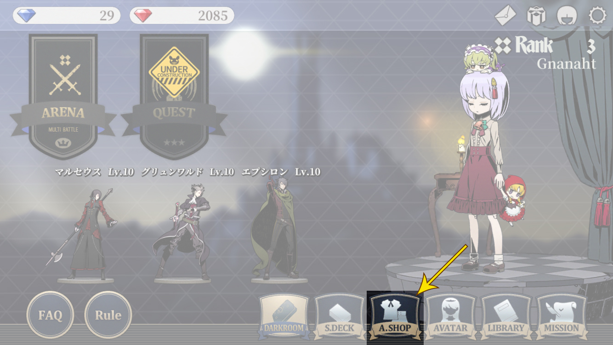
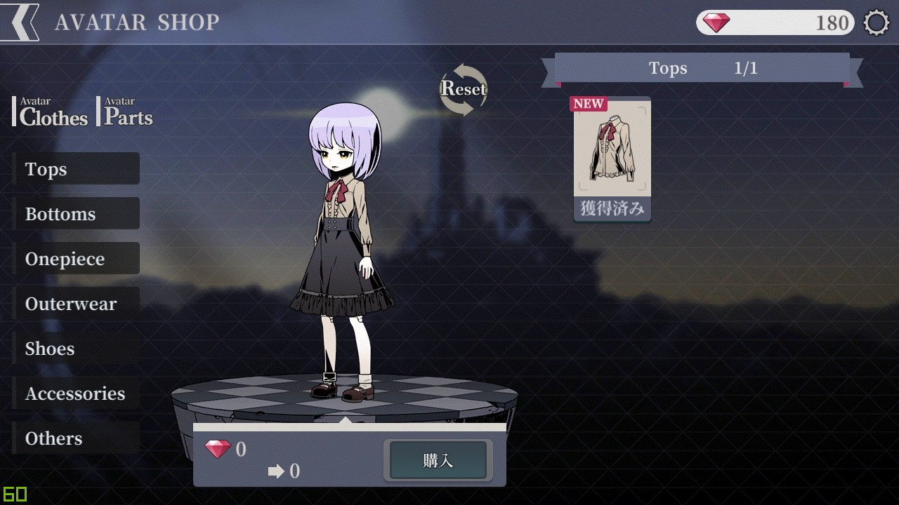

-
상점을 이용하는 법에 대해 알아봅니다.
-

상점에 들어오면 위와 같은 화면을 볼 수 있습니다.
※ 왼쪽 상단의 화살표를 눌러 메인 화면으로 돌아갈 수 있습니다.
※ 오른쪽 상단에는 보유중인 레드다이아 수량과 메인 화면과 동일한 설정 아이콘이 위치합니다.
"Clothes"를 누르면 "Tops"부터 "Others"의 탭이 펼쳐집니다.
각 탭에서 해당 탭의 아이템을 구매할 수 있습니다.
※ 이미 보유중인 아이템은 가격대신 "獲得濟み(획득했음)"이라는 문구가 등장합니다.
"Parts"를 누르면 "Hair"부터 "Skin"의 탭이 펼쳐집니다.
각 탭에서 해당 탭의 아이템을 구매할 수 있습니다.
"Hair" 탭에서 제일 첫번째 아이템(갈색 단발머리)을 눌러봅시다.
중앙의 아바타에서 해당 아이템의 미리보기를 지원합니다.
또한, 하단에서 현재 보유중인 레드다이아와 구매 후 레드다이아 잔량을 알려줍니다.
구입을 하려면 "購入(구입)" 버튼을 누르면 됩니다.
"Eyes" 탭을 눌러 넘어가면 미리보기가 초기화되고 해당 탭의 아이템이 표시됩니다.
※ 미리보기 초기화는 "Reset"을 누름으로써도 가능합니다.
아이템 목록 좌우의 화살표로 이전/이후 목록을 볼 수 있습니다.
-
이상으로 하위메뉴 []편을 마칩니다.
하위메뉴 []편으로 내용이 이어집니다.